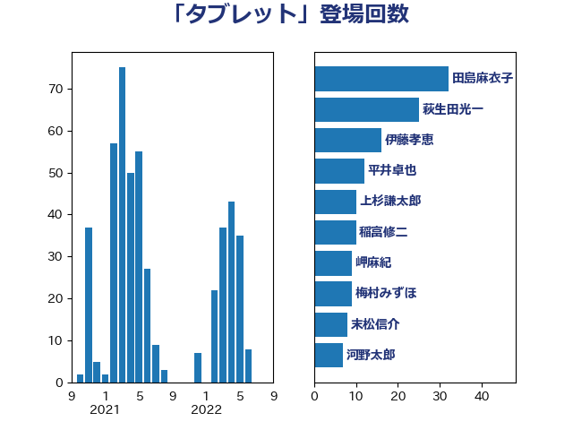

単語「タブレット」

| 田島麻衣子 | 立憲民主党 | 32 回 |
| 萩生田光一 | 自由民主党 | 25 回 |
| 伊藤孝恵 | 国民民主党 | 16 回 |
| 平井卓也 | 自由民主党 | 12 回 |
| 上杉謙太郎 | 自由民主党 | 10 回 |
| 稲富修二 | 立憲民主党 | 10 回 |
| 岬麻紀 | 日本維新の会 | 9 回 |
| 梅村みずほ | 日本維新の会 | 9 回 |
| 末松信介 | 自由民主党 | 8 回 |
| 河野太郎 | 自由民主党 | 7 回 |
| 岸田文雄 | 自由民主党 | 6 回 |
| 吉良よし子 | 日本共産党 | 5 回 |
| 斎藤嘉隆 | 立憲民主党 | 5 回 |
| 森山浩行 | 立憲民主党 | 5 回 |
| 福島みずほ | 社会民主党 | 5 回 |
| 舩後靖彦 | れいわ新選組 | 5 回 |
| 下村博文 | 自由民主党 | 4 回 |
| 古屋範子 | 公明党 | 4 回 |
| 安江伸夫 | 公明党 | 4 回 |
| 小泉進次郎 | 自由民主党 | 4 回 |
| 浅野哲 | 国民民主党 | 4 回 |
| 須藤元気 | 無所属 | 4 回 |
| 上野通子 | 自由民主党 | 3 回 |
| 中村裕之 | 自由民主党 | 3 回 |
| 小沢雅仁 | 立憲民主党 | 3 回 |
| 山本博司 | 公明党 | 3 回 |
| 岸真紀子 | 立憲民主党 | 3 回 |
| 平将明 | 自由民主党 | 3 回 |
| 柳ヶ瀬裕文 | 日本維新の会 | 3 回 |
| 片山大介 | 日本維新の会 | 3 回 |
| 牧島かれん | 自由民主党 | 3 回 |
| 白石洋一 | 立憲民主党 | 3 回 |
| 藤井比早之 | 自由民主党 | 3 回 |
| 青山周平 | 自由民主党 | 3 回 |
| 音喜多駿 | 日本維新の会 | 3 回 |
| 中川正春 | 立憲民主党 | 2 回 |
| 中曽根康隆 | 自由民主党 | 2 回 |
| 仁木博文 | 無所属 | 2 回 |
| 伊藤孝江 | 公明党 | 2 回 |
| 佐々木さやか | 公明党 | 2 回 |
| 勝部賢志 | 立憲民主党 | 2 回 |
| 古川康 | 自由民主党 | 2 回 |
| 大島敦 | 立憲民主党 | 2 回 |
| 宮口治子 | 立憲民主党 | 2 回 |
| 山谷えり子 | 自由民主党 | 2 回 |
| 平木大作 | 公明党 | 2 回 |
| 柚木道義 | 立憲民主党 | 2 回 |
| 横沢高徳 | 立憲民主党 | 2 回 |
| 櫻井周 | 立憲民主党 | 2 回 |
| 沢田良 | 日本維新の会 | 2 回 |
| 浦野靖人 | 日本維新の会 | 2 回 |
| 浮島智子 | 公明党 | 2 回 |
| 石川博崇 | 公明党 | 2 回 |
| 自見はなこ | 自由民主党 | 2 回 |
| 芳賀道也 | 国民民主党 | 2 回 |
| 菅義偉 | 自由民主党 | 2 回 |
| 谷合正明 | 公明党 | 2 回 |
| 道下大樹 | 立憲民主党 | 2 回 |
| 遠藤良太 | 日本維新の会 | 2 回 |
| 鈴木貴子 | 自由民主党 | 2 回 |
| 青山大人 | 立憲民主党 | 2 回 |
| 高野光二郎 | 自由民主党 | 2 回 |
| 一谷勇一郎 | 日本維新の会 | 1 回 |
| 三浦信祐 | 公明党 | 1 回 |
| 三谷英弘 | 自由民主党 | 1 回 |
| 串田誠一 | 日本維新の会 | 1 回 |
| 井上哲士 | 日本共産党 | 1 回 |
| 北側一雄 | 公明党 | 1 回 |
| 吉川元 | 立憲民主党 | 1 回 |
| 吉田はるみ | 立憲民主党 | 1 回 |
| 堤かなめ | 立憲民主党 | 1 回 |
| 塩村あやか | 立憲民主党 | 1 回 |
| 塩田博昭 | 公明党 | 1 回 |
| 大口善徳 | 公明党 | 1 回 |
| 大西健介 | 立憲民主党 | 1 回 |
| 奥野総一郎 | 立憲民主党 | 1 回 |
| 宮本周司 | 自由民主党 | 1 回 |
| 小山展弘 | 立憲民主党 | 1 回 |
| 小林茂樹 | 自由民主党 | 1 回 |
| 小野泰輔 | 日本維新の会 | 1 回 |
| 小野田紀美 | 自由民主党 | 1 回 |
| 山下貴司 | 自由民主党 | 1 回 |
| 山本左近 | 自由民主党 | 1 回 |
| 岡本あき子 | 立憲民主党 | 1 回 |
| 川崎ひでと | 自由民主党 | 1 回 |
| 柴田巧 | 日本維新の会 | 1 回 |
| 梶山弘志 | 自由民主党 | 1 回 |
| 武部新 | 自由民主党 | 1 回 |
| 水岡俊一 | 立憲民主党 | 1 回 |
| 泉田裕彦 | 自由民主党 | 1 回 |
| 清水貴之 | 日本維新の会 | 1 回 |
| 渡辺周 | 立憲民主党 | 1 回 |
| 牧原秀樹 | 自由民主党 | 1 回 |
| 田村まみ | 国民民主党 | 1 回 |
| 田村憲久 | 自由民主党 | 1 回 |
| 矢倉克夫 | 公明党 | 1 回 |
| 石井啓一 | 公明党 | 1 回 |
| 舟山康江 | 国民民主党 | 1 回 |
| 菊田真紀子 | 立憲民主党 | 1 回 |
| 藤田文武 | 日本維新の会 | 1 回 |
| 野田聖子 | 自由民主党 | 1 回 |
| 金子恭之 | 自由民主党 | 1 回 |
| 鈴木憲和 | 自由民主党 | 1 回 |
| 阿部司 | 日本維新の会 | 1 回 |
| 高木かおり | 日本維新の会 | 1 回 |
| 高木啓 | 自由民主党 | 1 回 |
| 鳩山二郎 | 自由民主党 | 1 回 |